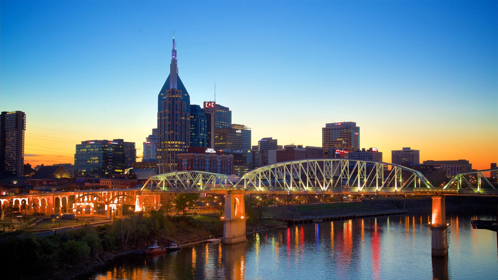
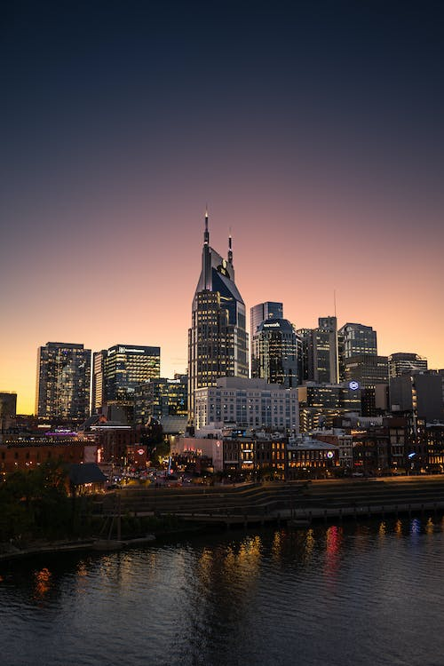
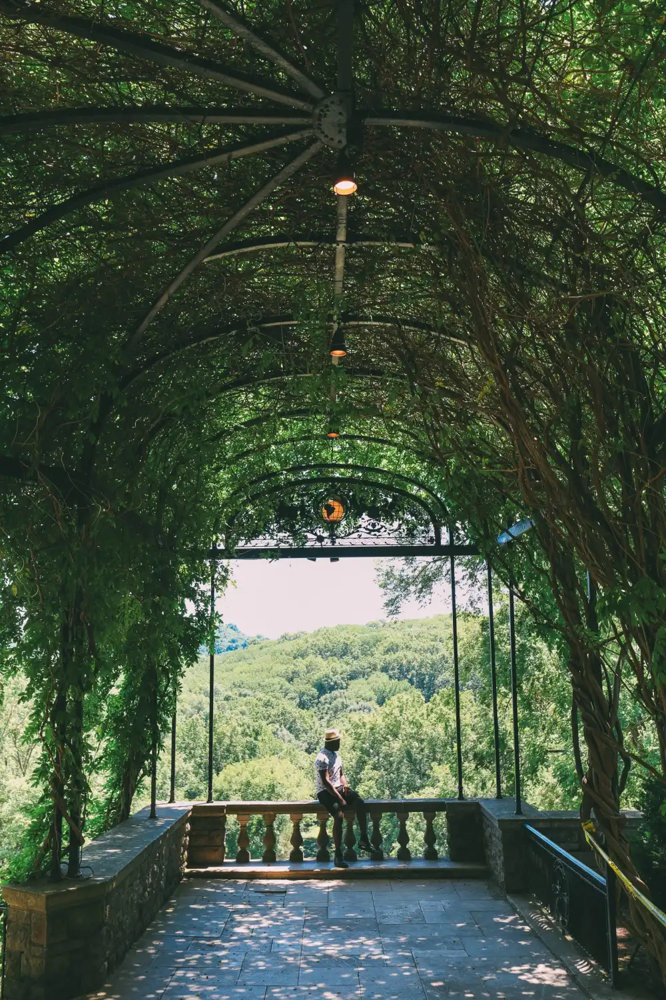
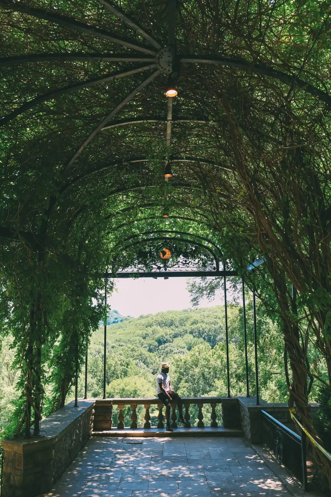

Music City, TN
About Me
Hello, My name is Rachel! I was born and raised in Nashville, TN and moved to the Seattle area to be near the mountains. I have really enjoyed my time living here in the last year and a half. Some of my favorite hobbies are fishing, hiking, cooking, playing video games, and video production. Currently, I am in the Application Development program here at North Seattle and seek to understand as much as I can about web development, design, and accessibility. I am very passionate about learning stringed instruments, drawing, and technology.
Here are some photos from my hometown:
 
